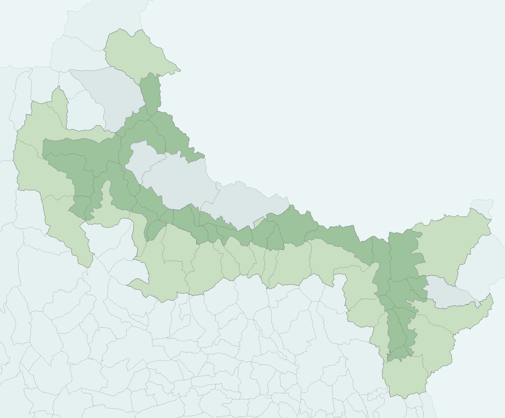

La base de données du Parc
Cette documentation décrit : le contenu général, la source des données, les projets QGIS associés, le détail des colonnes de certaines tables importantes, et des informations utiles pour la maintenance de chaque schéma*.
Choisissez un schéma ci-dessous pour en savoir plus !
Comment accéder à la base de données ?
Les données sont stockées dans la base de données du Parc Se connecter à la base de données dans QGIS.
Limites et territoire
-
admin_express
Limites administratives (produites par l'IGN).
-
limites
Limites du Parc et limites administratives.
-
inpn
Limites des parcs nationaux, des parcs régionaux et des réserves naturelles.
-
cadastre
Données publiques issues du cadastre.
Biodiversité et milieux naturels
-
geonature_synthese
Observations GeoNature, détaillées et agrégées selon différents critères.
-
bd_lacs
Données concernant les lacs.
-
bd_source
Données concernant les sources.
-
foret
Données concernant les forêts.
-
vegetation
Données concernant la flore.
Gestion et fréquentation
-
ag_pasto
Agropastoralisme.
-
geotrek
Sentiers du Parc.
-
PAEC
Indicateurs AgroEnvironnementaux et Climatiques.
-
tourisme
Tourisme et fréquentation du Parc (compteurs...).
Réglementation et zonages
-
charte
Données nécessaires à la réalisation de la carte des vocations.
-
rice
Réserve Internationale de Ciel Étoilé.
-
survol
Zones sensibles en lien avec les autorisations de survol.
Tous les schémas ne sont pas accessibles à tous les agents
Certains contiennent des données sensibles, si un schéma n'apparaît pas dans QGIS, contactez le SI : si@mercantour-parcnational.fr.
Documentation en cours
Si vous avez besoin d'infos complémentaires sur la donnée stockée dans la base contactez le SI : si@mercantour-parcnational.fr.